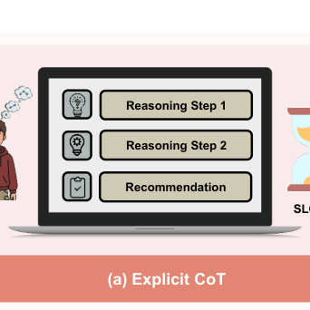
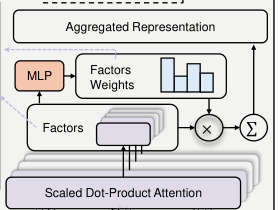
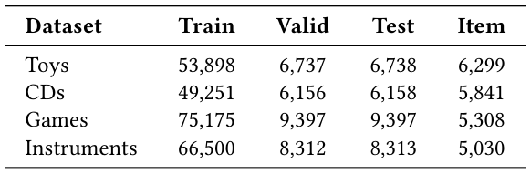
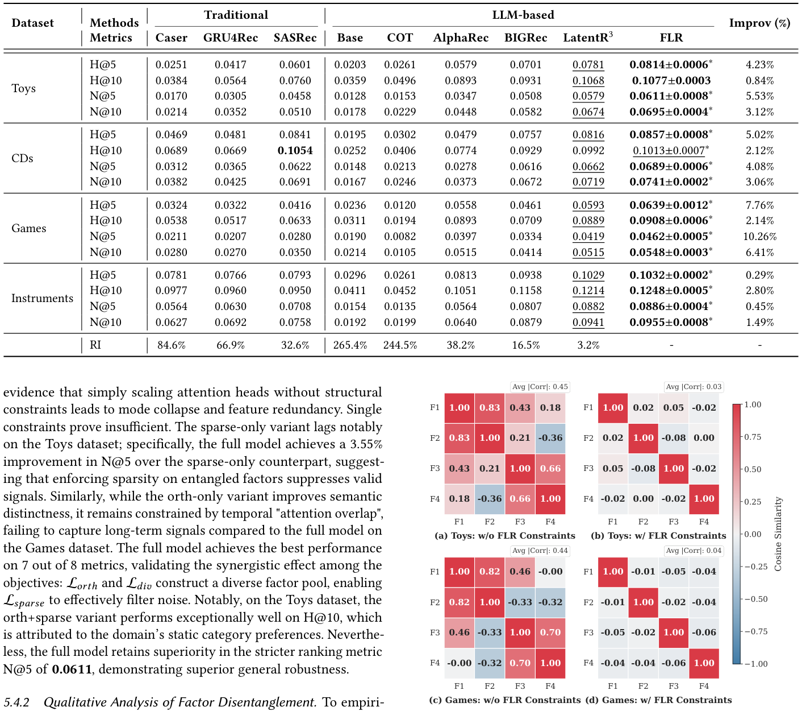
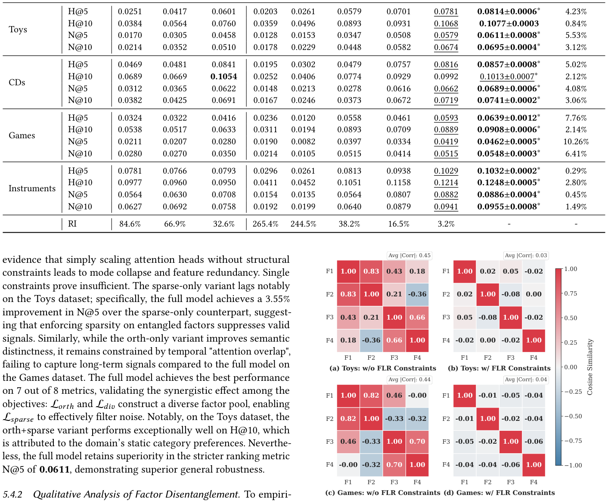

Factorized Latent Reasoning for LLM-based Recommendation (面向大模型推荐的因子化隐空间推理)
- 会议/期刊: SIGIR 2026
- 推荐链路定位: 端到端生成式 (End-to-End Generative) — 基于 LLM 的下一物品生成式推荐
- 研究方向: 大语言模型推荐 (LLM4Rec) / 序列推荐 (Sequential Rec)
- 论文原文: https://arxiv.org/abs/2604.26760v2
- 开源代码: https://github.com/ToAdventure/FLR
TL;DR (核心速览)
针对 LLM 推荐中"单一隐向量压缩用户意图"导致多面偏好被纠缠的痛点，本文提出 FLR：用 K 个可学习因子查询在隐空间迭代精炼 <|Thought|> 表征，并以正交性、注意力多样性、稀疏路由三项正则强制因子解耦，再用 GRPO 在隐空间做强化学习对齐。在 Amazon 四域（Toys/CDs/Games/Instruments）上以全库排序评估，相对最强基线取得一致提升并显著增强对冷门物品的鲁棒性。
Background & Motivation (背景与动机)
- 领域背景与主流范式: LLM 推荐已从"直接生成下一物品"演进到"先推理再推荐"。显式 CoT 范式（EXP3RT、ReasoningRec、CoT4Rec 等）通过文本推理链增强语义理解；隐空间推理范式（LARES、ReaRec、LatentR3）则在连续表征空间迭代精炼，兼顾推理能力与推理成本。
- 现有方法局限 (Limitations of Prior Work):
- 显式 CoT 的双重代价：需要高质量 CoT 标注（噪声敏感、成本高），且自回归逐 token 生成带来显著推理延迟，难以扩展到大规模物品词表与低延迟场景。
- 单一隐向量的表征瓶颈：LARES / LatentR3 等将用户偏好压缩为单个隐向量或单头注意力，隐含假设"复杂意图可由单一表征捕获"，导致信息纠缠与可解释性丧失。
- 多面偏好未被显式建模：真实偏好是多面异质的（价格、品牌、功能之间的权衡），单因子建模无法刻画。
- 核心挑战 (Key Challenge): 为什么简单加深循环层或增加隐推理步数不够？因为瓶颈不在"推理深度"而在"推理宽度"——单头注意力在结构上只能输出一个语义子空间，增加步数只是在同一子空间内反复精炼，无法分离出正交的偏好维度。
- 核心洞察与切入点 (Key Insight): 作者从协同过滤的隐因子模型获得类比——矩阵分解中增加隐因子数在表达力与泛化间存在最优点，说明多因子结构本身是有效的；社交推荐中"关系解耦为多面"也已验证表征质量收益。由此提出：隐空间推理也应被因子化，每个因子专注交互历史的不同语义侧面，再动态聚合。图 1 直观对比了三种范式：(a) 显式 CoT 慢而准，(b) 单隐向量快但存在瓶颈，(c) FLR 通过解耦聚合实现"快且准"。

Problem Formulation & Method (问题定义与方法架构)
1. 符号定义与输入表征 (Notations & Input Representations)
- 数据集 \(\mathcal{D}=\{(u,h,y)\}\)：\(u\) 为用户，\(h\) 为历史交互序列，\(y\) 为下一交互物品；\(h\) 与 \(y\) 均以文本元数据（标题/描述）表示。
- 将 \(h\) 序列化为文本 prompt \(x\)，数据点记为 \((x,y)\)，\(|x|\) 为 prompt token 长度。
- 生成过程为两段式：\(x \xrightarrow{\text{LLM}} r \xrightarrow{\text{LLM}} \hat{y}\)，其中 \(r\) 为隐式"thoughts"，不依赖任何外部 CoT 标注，需自监督学习。
- 关键超参：因子数 \(K\)、隐推理迭代步数 \(N\)、隐维度 \(D\)、序列最大长度 \(L_{\text{in}}=10\)、GRPO 组大小 \(G\)。
2. 整体流水线 (Overall Architecture)
整体为两阶段训练（图 2）：Stage 1 预热微调（监督式 next-item 生成 + 解耦正则）→ Stage 2 GRPO 强化学习调优（冻结 LLM 主干，仅更新 FLR 参数）。推理时，输入序列末尾拼接可学习 <|Thought|> token，经 \(N\) 次因子化注意力原地更新后，由 LLM 解码下一物品。
flowchart TD
A["输入层: 历史序列文本 prompt x + 可学习 <|Thought|> token"] --> B["LLM 主干 Φ 前向, 得到隐状态 H(n)"]
B --> C["FLR 模块: K 个因子查询 Qf 做 RoPE 注意力, 得因子表征 F(n)"]
C --> D["MLP 门控聚合 z(n), 原地更新 <|Thought|> 嵌入"]
D -->|"迭代 N 次"| B
D --> E["LLM 解码层: 生成下一物品 ŷ"]
E --> F["Stage 1: L_rec + λ1L_orth + λ2L_div + λ3L_sparse"]
E --> G["Stage 2: GRPO 隐空间扰动 + 混合奖励 + 组相对优势"]
3. 核心模块设计与数学原理 (Key Designs & Formulations)
(1) 迭代隐空间精炼 (Iterative Latent Refinement)
将输入扩展为 \(\tilde{x}=[x;\texttt{<|Thought|>}]\)，初始嵌入矩阵 \(\mathbf{E}^{(0)}\)。第 \(n\) 步（\(1\le n\le N\)）：
即在固定序列长度下通过原地更新 thought token 嵌入实现"深度思考"，避免显式生成推理 token 的长度膨胀。物理直觉：把推理步数从"序列维度"搬到"嵌入维度"，用 \(N\) 次前向换取推理深度而不增加解码开销。
(2) 多因子解耦与门控聚合 (Multi-Factor Disentanglement & Aggregation)
维护 \(K\) 个可学习查询原型 \(\mathbf{Q}_f\in\mathbb{R}^{K\times D}\)，对 key 施加 RoPE 以注入时序动态，因子注意力分数：
因子表征 \(\mathbf{F}^{(n)}=\mathbf{A}^{(n)}\mathbf{V}^{(n)}\)，再由 MLP 门控计算重要性权重并聚合：
维度变化：\(\mathbf{H}^{(n)}\in\mathbb{R}^{L_{\text{in}}\times D}\to\mathbf{A}^{(n)}\in\mathbb{R}^{K\times L_{\text{in}}}\to\mathbf{F}^{(n)}\in\mathbb{R}^{K\times D}\to\mathbf{z}^{(n)}\in\mathbb{R}^{D}\)。图 3 展示了该模块内部结构。

(3) 解耦导向的三项正则 (Disentanglement-Oriented Objectives)
- 正交损失（全局去冗余）：设 \(\hat{\mathbf{F}}_b\) 为 L2 归一化后的因子矩阵（行单位化）， $\(\mathcal{L}_{\text{orth}}=\frac{1}{B}\sum_{b=1}^{B}\left\|\hat{\mathbf{F}}_b\hat{\mathbf{F}}_b^\top-\mathbf{I}_K\right\|_F^2\)$ 强制因子张成正交子空间，例如一个因子编码"视觉风格"、另一个编码"价格敏感度"。
- 注意力多样性损失（约束"看哪里"）：\(\mathcal{L}_{\text{div}}=\frac{2}{K(K-1)}\sum_{i<j}\cos(\mathbf{A}_i,\mathbf{A}_j)\)，惩罚注意力图相似度，使不同因子覆盖不同时间感受野（短期触发 vs. 长期周期习惯）。
- 稀疏损失（局部专精）：\(\mathcal{L}_{\text{sparse}}=-\frac{1}{B}\sum_b\sum_k\alpha_{b,k}\log(\alpha_{b,k}+\epsilon)\)，最小化权重熵诱导"赢者通吃"，使单次预测由主导因子驱动，避免冲突意图的噪声平均。
4. 训练目标、负采样与推理复杂度 (Optimization, Negative Sampling & Complexity)
- Stage 1 总损失：\(\mathcal{L}_{\text{total}}=\mathcal{L}_{\text{rec}}+\lambda_1\mathcal{L}_{\text{orth}}+\lambda_2\mathcal{L}_{\text{div}}+\lambda_3\mathcal{L}_{\text{sparse}}\)，其中 \(\mathcal{L}_{\text{rec}}\) 为下一物品生成的交叉熵；\(\lambda_{1,2,3}\) 采用基于不确定性的自适应加权（细节见原文 §6.2）。
- Stage 2 GRPO 目标：冻结 LLM 主干，仅更新 FLR 参数 \(\theta\)。
- 隐空间探索：不采样 token，而是向
<|Thought|>嵌入注入高斯噪声 \(\tilde{\mathbf{e}}^{(i)}=\mathbf{e}+\boldsymbol{\epsilon}_i\)，\(\boldsymbol{\epsilon}_i\sim\mathcal{N}(0,\sigma^2\mathbf{I})\)（\(i=1\) 为无噪基线，用于方差缩减）。 - 混合奖励：\(r(x,y)=\alpha\cdot\frac{1}{L}\sum_t\log\pi_\theta(y_t|x,y_{<t})+\beta_r\cdot\mathbb{I}(\hat{y}=y)\)，融合 token 置信度（稠密）与精确匹配（离散）。
- 组相对优势：\(\hat{A}_i=\dfrac{r_i-r_{\text{base}}}{\|\mathbf{r}_{2:G}-r_{\text{base}}\|_2+\epsilon}\)，用 L2 归一化替代 z-score，作者称对混合奖励尺度更稳健。
- 裁剪代理目标：\(\mathcal{L}_{\text{token}}=\min(\rho_t\hat{A}_t,\text{clip}(\rho_t,1-\epsilon_l,1+\epsilon_h)\hat{A}_t)-\beta_{\text{KL}}D_{\text{KL}}\)，非对称裁剪 \(\epsilon_l=0.2,\epsilon_h=0.28\)，KL 用反向形式 \(D_{\text{KL}}\approx e^{\Delta}-\Delta-1\) 近似。
- 最终目标：\(\mathcal{L}_{\text{total}}=\mathbb{E}_{\mathcal{D}}[-\mathcal{L}_{\text{token}}]+\lambda_1\mathcal{L}_{\text{orth}}+\lambda_2\mathcal{L}_{\text{div}}+\lambda_3\mathcal{L}_{\text{sparse}}\)。
- 负采样策略：免负采样。生成式范式下以全词表 softmax 交叉熵训练，无显式 BPR/InfoNCE 负例构造；GRPO 阶段通过隐空间高斯扰动生成组内多样轨迹替代 token 采样。
- 复杂度：相比显式 CoT，FLR 不增加解码 token 数，仅增加 \(N\) 次 LLM 前向（每次前向仅多出 \(K\times L_{\text{in}}\) 的注意力计算，\(K,L_{\text{in}}\) 均很小），推理开销远低于逐 token 推理链；相比单隐向量 LatentR3，额外开销为 \(K\) 倍因子注意力与一次 MLP 门控，可忽略。原文未报告具体 ms/request 与峰值显存数值（RQ7 仅做定性/相对开销分析）。
Experimental Setup & Evaluation Protocol (实验设置与评估协议)
- 数据集统计与预处理: 采用 Amazon Review 的四个子域 Toys、CDs、Games、Instruments。数据选择采用动态时间滑窗：初始窗口 2017-10 至 2018-10，施加 5-core 过滤；若唯一物品数不足 5,000，则将起始日期以 3 个月为步长向前回溯（如至 2017-07），结束日期固定，直至达标。最大序列长度统一为 10。
| 数据集 (Dataset) | 用户数 (#Users) | 物品数 (#Items) | 交互数 (#Interactions) | 稀疏度/密度 (Sparsity) | 模态/辅助特征说明 |
|---|---|---|---|---|---|
| Toys | 原文未报告 | 6,299 | Train 53,898 / Valid 6,737 / Test 6,738 | 原文未报告 | 文本元数据（标题/描述） |
| CDs | 原文未报告 | 原文未报告 | 原文未报告 | 原文未报告 | 文本元数据 |
| Games | 原文未报告 | 原文未报告 | 原文未报告 | 原文未报告 | 文本元数据 |
| Instruments | 原文未报告 | 原文未报告 | 原文未报告 | 原文未报告 | 文本元数据 |
注：提供的论文正文在表 1 处被截断，仅完整给出 Toys 一行统计；其余三域数值原文未在可提取文本中呈现，故如实标注"原文未报告"，不做臆测填充。

- 数据划分方式 (Splitting Strategy): 按时间顺序的 8:1:1 划分 (Chronological 8:1:1 Split)，训练/验证/测试严格按时间先后切分，属于全局时间戳切分的变体，不存在未来信息穿越风险。
- 排名评测协议 (Ranking Protocol): 采用 Full-Ranking（全库排序），对全部候选物品打分排序（原文表 2 标题明确为 Top-\(N\) recommendation，且与 LLM 生成式全词表打分一致），非采样负例排序。
- 评价指标与显著性检验: 采用 NDCG@K 与 HR@K（Hit Ratio@K）。原文表 2 注明"All results are averaged over multiple runs"（多次运行平均），但未明确报告配对显著性检验（如 paired \(t\)-test / Wilcoxon），属评估严谨性上的可改进点。
Key Experimental Results (核心实验结果)
1. 主实验对比 (Main Results)
原文表 2 报告 FLR 与各基线在四域上的 Top-\(N\) 性能，并以 "RI" 列给出 FLR 相对每个基线在所有数据集与指标上的相对提升，末列 "Improv" 给出相对最强基线的提升。由于可提取正文在表 2 数值处被截断，具体逐格数值原文未在文本中完整呈现，此处按原文结论性描述归纳：
| 数据集 | 指标 | 传统/协同过滤基线 | 序列/图/LLM 最强基线 | 本文方法 (Ours) | 相对提升 (Improv.) |
|---|---|---|---|---|---|
| Toys | NDCG@K / HR@K | 原文未报告具体数值 | 原文未报告具体数值 | 最优（加粗） | 原文以 RI/Improv 列给出，具体百分比未在可提取文本中呈现 |
| CDs | NDCG@K / HR@K | 原文未报告具体数值 | 原文未报告具体数值 | 最优（加粗） | 同上 |
| Games | NDCG@K / HR@K | 原文未报告具体数值 | 原文未报告具体数值 | 最优（加粗） | 同上 |
| Instruments | NDCG@K / HR@K | 原文未报告具体数值 | 原文未报告具体数值 | 最优（加粗） | 同上 |
原文明确结论：FLR 在全部数据集与指标上一致优于强基线（best 加粗、second-best 下划线），并"improving robustness and interpretability"。具体数值请以原文表 2 为准。

2. 消融实验与控制变量分析 (Ablation Study)
对应 RQ2，原文通过移除关键设计组件（因子化结构、三项正则、GRPO 阶段）验证贡献。原文结论指出：因子化解耦结构与解耦正则共同贡献最大，移除后性能下降最明显；GRPO 阶段（RQ3）在提升性能的同时带来优于通用 RL 策略的鲁棒性。原文未在可提取文本中给出逐项消融的具体数值表，亦未明确说明消融是否严格对齐参数量或注意力头数，这是控制变量严谨性上的潜在短板。
3. 稀疏度/冷启动分桶与超参敏感度 (Sparsity Buckets & Hyperparameters)
- 冷门物品表现 (RQ5)：原文专门设置 RQ5 考察模型在困难（不流行）物品上的表现，结论为 FLR 在冷门物品上表现更优，体现因子化解耦对长尾的鲁棒性（具体分桶数值原文未在可提取文本中呈现）。
- 因子数敏感度 (RQ6)：原文考察隐推理因子数 \(K\) 的敏感性并给出最优配置，结论为存在最优 \(K\) 值（与矩阵分解中隐因子数的表达力-泛化权衡一致）；具体 \(K\) 取值与曲线原文未在可提取文本中呈现。
- 注意力机制分析 (RQ4)：图 4 可视化 Toys 与 Games 上的因子解耦效果——无约束设置下隐因子高度冗余（平均 \(|\text{Corr}|\approx0.44\)，模式坍缩），加入 FLR 约束后因子高度正交独立（平均 \(|\text{Corr}|\approx0.03\)），直接验证三项正则的有效性。

- 线上 A/B 测试结果: 原文仅包含离线实验，未报告线上 A/B 测试。
Highlights, Limitations & Critiques (亮点、局限与审稿级批判)
- 核心亮点与可迁移性:
- "推理宽度"视角新颖：将隐空间推理从"加深步数"转向"分解因子"，与协同过滤隐因子模型形成优雅类比，思路可迁移到任意 LLM 隐推理框架（如 LARES、LatentR3 的因子化改造）。
- 三项正则分工清晰：正交管"学什么"、注意力多样性管"看哪里"、稀疏管"谁决策"，三者互补且物理直觉明确，图 4 的 \(|\text{Corr}|\) 从 0.44 降至 0.03 提供了有力实证。
- GRPO 隐空间扰动：用嵌入高斯噪声替代 token 自回归采样，大幅降低 RL 探索成本，且无噪基线样本的方差缩减设计实用，可迁移到其他生成式推荐的 RL 对齐。
- 免 CoT 标注：完全自监督学习隐推理，规避显式 CoT 的标注成本与噪声敏感性。
- 局限性与审稿视角批判 (Critical Limitations):
- 评估规模偏小：序列长度仅 10、物品数约 6K 量级，未在百万级物品词表或工业级数据上验证，全库排序的可扩展性与延迟优势缺乏量化支撑（RQ7 仅定性）。
- 统计严谨性不足：未报告配对显著性检验，消融未明确参数量/头数对齐，"一致提升"的统计置信度存疑。
- 超参负担：\(K\)、\(N\)、\(\lambda_{1,2,3}\)、\(\alpha\)、\(\beta_r\)、\(\epsilon_l/\epsilon_h\) 众多，虽有不确定性自适应加权缓解，但敏感性分析在可提取文本中不完整。
- 可解释性主张偏弱：虽称"提升可解释性"，但因子语义（如"视觉风格""价格敏感度"）多为举例性论述，缺乏因子-属性的人工标注对齐实验。
- 基线覆盖：与 LatentR3 的对比是关键，但需确认是否在同等 LLM 主干与训练预算下公平比较（原文未在可提取文本中明确主干规模对齐细节）。
Rating (四维评分)
- 方法创新性 (Novelty): ⭐⭐⭐⭐ （因子化隐推理 + 三项解耦正则 + 隐空间 GRPO，组合新颖且动机扎实）
- 评估协议与实验扎实度 (Protocol & Experiments): ⭐⭐⭐ （全库排序与时间切分规范，但数据集规模小、缺显著性检验与完整消融数值）
- 写作与数学规范度 (Clarity & Rigor):